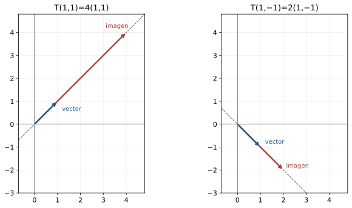
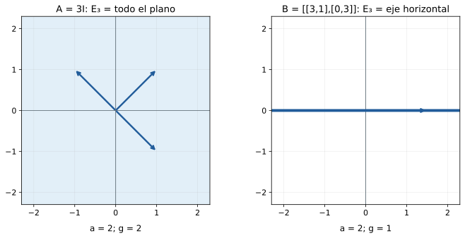
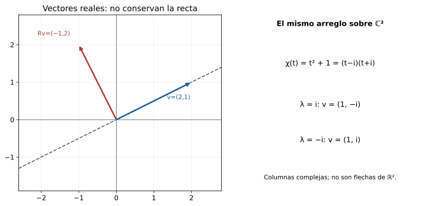

Capítulo 14. Valores propios y vectores propios
Álgebra para matemáticos · Tomo II
← Capítulo 13 · Índice del tomo II · Obra completa · Capítulo 15 →
La transformación \(T(x,y)=(3x+y,x+3y)\) mezcla las dos coordenadas de una entrada. Sin embargo, hay vectores para los que su acción se vuelve particularmente sencilla: \(T(1,1)=(4,4)=4(1,1)\) y \(T(1,-1)=(2,-2)=2(1,-1)\). En cada una de esas direcciones basta multiplicar por un número. Como los dos vectores forman una base de \(\mathbb R^2\), cualquier entrada puede descomponerse en esas componentes y transformarse escalándolas por separado.
C12 mostró cómo cambia una matriz al escoger otra base. El ejemplo sugiere un criterio para escogerla: buscar vectores cuya imagen sea un múltiplo de ellos mismos. Antes de confiar en ese procedimiento necesitamos saber si existen, cómo encontrarlos y cuántas direcciones independientes pueden proporcionar. Una rotación de un cuarto de vuelta ya presenta una dificultad: ningún vector real no nulo queda sobre la recta que generaba. La respuesta dependerá tanto de la transformación como del cuerpo en que trabajemos.

Trabajaremos con operadores \(T:V\to V\) sobre un cuerpo conmutativo \(\mathbb F\). Indicaremos cuándo se necesita que la dimensión sea finita; las matrices serán cuadradas y las coordenadas, columnas. Usaremos núcleos y rango de C09, bases de C07, representación y semejanza de C12, y determinantes de C13. Las raíces y sus multiplicidades se recuperan del tomo I, C24–C26. Cuando invoquemos el teorema fundamental del álgebra conservará el estatuto que tiene en §26.15: resultado externo admitido, cuya demostración no se ha dado en estos tomos.
14.1. Una recta en la que el operador sólo escala
Definición 14.1. Un escalar \(\lambda\in\mathbb F\) es un valor propio de \(T\) si existe \(v\in V\), \(v\ne0\), tal que \(T(v)=\lambda v\). Ese vector es un vector propio asociado a \(\lambda\). Se llama espacio propio asociado al escalar \(\lambda\) al conjunto
\[ E_\lambda(T)=\{v\in V:T(v)=\lambda v\}. \]
También se usan los nombres autovalor, autovector y autoespacio. El conjunto de valores propios en \(\mathbb F\) se denotará \(\operatorname{spec}_{\mathbb F}(T)\), o simplemente \(\operatorname{spec}(T)\) cuando el cuerpo esté fijado. En este capítulo, espectro se refiere a ese conjunto algebraico en dimensión finita; no presupone las nociones de análisis funcional.
La restricción \(v\ne0\) distingue información del operador: la igualdad \(T(0)=\lambda0\) vale para todo escalar y no permite seleccionar ninguno. En cambio, el valor propio cero está permitido. Se presenta exactamente cuando un vector no nulo se anula al aplicar \(T\).
Proposición 14.1. Para todo escalar \(\lambda\), \(E_\lambda(T)=\ker(T-\lambda I)\) y es un subespacio. El escalar es un valor propio si y sólo si ese subespacio es distinto de \(\{0\}\). Cada vector propio determina un único valor propio. Una recta \(L\subseteq V\) satisface \(T(L)\subseteq L\) si y sólo si está generada por un vector propio.
Demostración. Reescribir \(T(v)=\lambda v\) como \((T-\lambda I)v=0\) da la identidad con el núcleo; el resultado de subespacio procede de C09. La condición de ser valor propio exige que ese núcleo contenga un vector no nulo. Si \(T(v)=\lambda v=\mu v\) con \(v\ne0\), entonces \((\lambda-\mu)v=0\); si los escalares fueran distintos, dividir por su diferencia obligaría a \(v=0\). Así, \(\lambda=\mu\).
Si \(L=\operatorname{span}v\) con \(v\ne0\) y \(T(L)\subseteq L\), existe \(\lambda\) con \(T(v)=\lambda v\). Recíprocamente, esa igualdad da \(T(cv)=c\lambda v\in L\) para todo \(c\in\mathbb F\), de modo que la recta se preserva. \(\square\)
El espacio propio contiene al cero, aunque éste no sea vector propio. Para \(\lambda\) fijo, toda combinación lineal de vectores de \(E_\lambda\) permanece allí. Si tomamos vectores correspondientes a valores diferentes, esa conclusión deja de estar disponible: para el operador inicial, \((1,1)+(1,-1)=(2,0)\) tiene imagen \((6,2)\), que no es un múltiplo de \((2,0)\).
Sobre los reales, \(\lambda>1\) alarga los vectores de esa recta; \(0<\lambda<1\) los acorta; \(\lambda=1\) los fija; \(\lambda=0\) los anula; y \(\lambda<0\) invierte su sentido además de cambiar su longitud por el factor \(|\lambda|\). Este lenguaje de orden y longitud corresponde a \(\mathbb R\). La ecuación de la definición sigue teniendo sentido sobre cuerpos que no poseen ese orden.
14.2. Encontrar primero el escalar y después el espacio
Para una matriz \(A\in M_n(\mathbb F)\), buscar \(Av=\lambda v\) parece un sistema en el que tanto el vector como el escalar son desconocidos. Fijar provisionalmente \(\lambda\) lo convierte en el sistema homogéneo \((A-\lambda I)v=0\). Los capítulos anteriores permiten decidir cuándo tiene soluciones no triviales: exactamente cuando la matriz es singular, o equivalentemente cuando su determinante se anula.
Podemos organizar todos esos determinantes en un polinomio. La letra \(t\) será una indeterminada: en la matriz \(tI-A\) aparecen polinomios, y la fórmula de Leibniz de C13 produce un polinomio en \(t\). Esta escritura no requiere construir un nuevo espacio de vectores propios con coordenadas polinomiales. Al evaluar en \(t=\lambda\) volvemos a una matriz sobre \(\mathbb F\).
Definición 14.2. El polinomio característico de \(A\) es
\[ \chi_A(t)=\det(tI_n-A). \]
Para un operador en un espacio de dimensión finita, definiremos \(\chi_T\) mediante una matriz en una misma base de entrada y salida, una vez comprobada su independencia de esa elección. En orden cero se adopta \(\chi(t)=1\).
Las identidades de determinantes que utilizaremos con entradas polinomiales se justifican por los mismos argumentos de expansión de C13: multilinealidad, alternancia, multiplicatividad y fórmula de bloques emplean sumas, productos y signos, sin dividir por entradas. Esos argumentos siguen siendo válidos para los polinomios con coeficientes en \(\mathbb F\). Así podemos probar identidades de polinomios directamente, sin inferirlas sólo de sus valores; esta precaución importa sobre cuerpos finitos, donde dos polinomios distintos pueden definir la misma función.
Teorema 14.2 (criterio característico). Para \(n\ge1\), \(\chi_A\) es mónico de grado \(n\). Un escalar \(\lambda\in\mathbb F\) es valor propio de \(A\) si y sólo si \(\chi_A(\lambda)=0\). Para tal escalar, sus vectores propios son exactamente los elementos no nulos de \(\ker(A-\lambda I)\). El coeficiente de \(t^{n-1}\) es \(-\operatorname{tr}A\) y el término constante es \((-1)^n\det A\).
Demostración. Cada entrada de \(tI-A\) es un polinomio de grado a lo sumo uno. En Leibniz, el término de la permutación identidad es \(\prod_i(t-a_{ii})\), cuyo término de grado \(n\) es \(t^n\). Una permutación distinta de la identidad mueve al menos dos posiciones: si moviera sólo una, dejaría sin imagen o con imagen repetida uno de los índices y no sería biyectiva. En esas posiciones se escogen entradas fuera de la diagonal, que son constantes. Cada término restante tiene grado a lo sumo \(n-2\). Por tanto, el coeficiente principal es uno y el coeficiente de \(t^{n-1}\) procede sólo del producto diagonal: es \(-\sum_i a_{ii}=-\operatorname{tr}A\). Para \(n=1\) la única permutación es la identidad y el cálculo sigue siendo válido.
Evaluar la fórmula de Leibniz en \(t=\lambda\) da \(\chi_A(\lambda)=\det(\lambda I-A)\). Este escalar es cero exactamente cuando \(\lambda I-A\) tiene un núcleo no trivial, por C13 y C09. Ese núcleo coincide con \(\ker(A-\lambda I)\), y sus elementos no nulos son los vectores propios por definición. Finalmente, \(\chi_A(0)=\det(-A)=(-1)^n\det A\). \(\square\)
En orden dos se obtiene \(\chi_A(t)=t^2-(\operatorname{tr}A)t+\det A\). La convención \(\det(tI-A)\) fija el coeficiente principal en uno. Algunas fuentes usan \(\det(A-tI)=(-1)^n\chi_A(t)\); tienen las mismas raíces y multiplicidades, pero no siempre los mismos signos de los coeficientes.
Una vez encontradas las raíces que pertenecen al cuerpo de trabajo, todavía falta resolver un sistema para cada una. El determinante identifica los escalares; no entrega por sí solo una base de los núcleos. Tampoco indica que todos esos espacios sean rectas.
14.3. La matriz cambia, las direcciones del espacio permanecen
Proposición 14.3. Si \(B=P^{-1}AP\) con \(P\) invertible, entonces \(\chi_B=\chi_A\) y, para cada \(\lambda\in\mathbb F\),
\[ E_\lambda(B)=P^{-1}E_\lambda(A). \]
Por consiguiente, el polinomio característico, el conjunto de valores propios y las dimensiones de sus espacios propios no dependen de la base usada para representar un operador.
Demostración. La identidad \(tI-B=P^{-1}(tI-A)P\) y la multiplicatividad del determinante dan
\[ \chi_B(t)=\det(P^{-1})\det(tI-A)\det P=\chi_A(t), \]
porque \(\det(P^{-1})\det P=1\). Es una igualdad de polinomios por los argumentos de expansión ya precisados.
Para los espacios, \(Bx=\lambda x\) equivale, al multiplicar por \(P\), a \(A(Px)=\lambda(Px)\). Así, \(x\in E_\lambda(B)\) si y sólo si \(Px\in E_\lambda(A)\). La transformación \(P\) es un isomorfismo entre ambos subespacios, por lo que sus dimensiones coinciden. C12 identifica dos matrices de un mismo operador precisamente mediante esa semejanza. \(\square\)
Esta proposición permite escribir \(\chi_T\) sin ambigüedad. Los vectores de \(V\) que son propios no cambian por elegir otra base; cambian sus columnas de coordenadas. La afirmación de que matrices semejantes tienen «los mismos vectores propios» como columnas sería, en general, falsa: la correspondencia es \(P^{-1}\).
Para el operador de la apertura,
\[ A=\begin{pmatrix}3&1\\1&3\end{pmatrix},\qquad \chi_A(t)=(t-3)^2-1=(t-4)(t-2). \]
Para \(\lambda=4\), el sistema \((A-4I)v=0\) se reduce a \(-x+y=0\), por lo que \(E_4=\operatorname{span}(1,1)\). Para \(\lambda=2\), se reduce a \(x+y=0\), y \(E_2=\operatorname{span}(1,-1)\). Los vectores usados al comienzo han aparecido como bases de núcleos, y sus múltiplos no nulos son todos los vectores propios. En la base formada por ellos, la matriz es \(\operatorname{diag}(4,2)\). La sencillez de esa representación se explica por la acción sobre los vectores básicos.
14.4. Los valores distintos separan componentes
Dos rectas propias asociadas a valores distintos sólo se cortan en cero, pues un vector no nulo no puede tener dos valores propios. Para tres o más subespacios, C11 advirtió que las intersecciones por parejas no bastan para probar que su suma sea directa. Necesitamos controlar una relación conjunta.
Teorema 14.4 (independencia de espacios propios). Si \(\lambda_1,\ldots,\lambda_k\) son valores propios distintos de \(T\), la suma \(E_{\lambda_1}(T)+\cdots+E_{\lambda_k}(T)\) es directa. En particular, al escoger en cada espacio propio una familia finita independiente, concatenar esas familias produce una familia independiente.
Demostración. Probaremos por inducción en \(k\) que una igualdad \(w_1+\cdots+w_k=0\), con \(w_i\in E_{\lambda_i}\), obliga a que todos los \(w_i\) sean cero. Para \(k=1\) la afirmación es inmediata. Supongamos probado el resultado para \(k-1\). Aplicar \(T\) a la igualdad multiplica la componente \(w_i\) por \(\lambda_i\). Queremos eliminar una componente para obtener una relación a la que se aplique la inducción; restamos \(\lambda_k\) veces la igualdad original y obtenemos
\[ \sum_{i=1}^{k-1}(\lambda_i-\lambda_k)w_i=0. \]
Cada sumando sigue perteneciendo al espacio propio correspondiente. La hipótesis inductiva obliga a \((\lambda_i-\lambda_k)w_i=0\) para \(i<k\). Las diferencias son no nulas, por lo que \(w_i=0\) para esos índices, y la relación original da también \(w_k=0\).
Para la segunda afirmación, agrupamos una relación entre los vectores concatenados según su espacio propio. La directitud obliga a que cada grupo sea cero; la independencia dentro del grupo anula todos sus coeficientes. \(\square\)
La prueba no requiere dimensión finita y admite que alguno de los \(w_i\) sea cero. Lo que exige es que los valores propios sean distintos. Dos vectores del mismo espacio propio pueden ser dependientes; escogerlos arbitrariamente no garantiza una familia independiente.
Corolario 14.5. En un espacio de dimensión \(n\), un operador tiene a lo sumo \(n\) valores propios distintos. Si tiene exactamente \(n\), escoger un vector propio por cada valor produce una base. Más generalmente, para sus valores propios distintos \(\lambda_i\),
\[ \sum_i\dim E_{\lambda_i}(T)\le n. \]
Demostración. Una elección de un vector propio no nulo por cada valor distinto es independiente por el teorema 14.4, de modo que su longitud es a lo sumo \(n\). Si alcanza \(n\), es una base por C07. Para la última desigualdad, elegimos una base en cada espacio propio: su concatenación es independiente y su longitud es la suma indicada. \(\square\)
La cota también procede del grado del polinomio característico, pero el argumento de independencia informa sobre los vectores. Tener pocos valores propios no significa tener pocos vectores propios: para \(T=3I\) en \(\mathbb R^2\), sólo aparece el valor tres y todo vector no nulo es propio. Sobre un cuerpo finito, incluso el número de vectores de un espacio propio es finito; su dimensión es la medida que permite comparar ambos contextos.
14.5. Una raíz repetida no cuenta por sí sola las direcciones
Comparemos las matrices
\[ A=\begin{pmatrix}3&0\\0&3\end{pmatrix},\qquad B=\begin{pmatrix}3&1\\0&3\end{pmatrix}. \]
Ambas tienen polinomio característico \((t-3)^2\). Para \(A\), todo el plano es \(E_3(A)\). Para \(B\), la ecuación \((B-3I)(x,y)=(y,0)=0\) obliga a \(y=0\), de modo que \(E_3(B)=\operatorname{span}e_1\). La raíz aparece dos veces en ambos polinomios, pero sólo la primera matriz proporciona dos direcciones propias independientes.
Definición 14.3. La multiplicidad algebraica de un valor propio \(\lambda\) es su multiplicidad como raíz de \(\chi_T\): el mayor entero \(a\ge1\) para el que \((t-\lambda)^a\) divide a \(\chi_T(t)\). Su multiplicidad geométrica es \(g=\dim E_\lambda(T)\).
La primera se calcula en una factorización de polinomios; la segunda, resolviendo un sistema homogéneo. En el ejemplo, \(a=2\) para ambas matrices, mientras \(g=2\) para \(A\) y \(g=1\) para \(B\).

Teorema 14.6 (comparación de multiplicidades). Si \(\lambda\) es un valor propio de un operador en dimensión finita, sus multiplicidades satisfacen \(1\le g\le a\).
Demostración. Existe un vector propio no nulo, por lo que \(g\ge1\). Tomemos una base \(v_1,\ldots,v_g\) de \(E_\lambda\) y extendámosla a una base de \(V\). Como \(T(v_i)=\lambda v_i\) para los primeros \(g\) vectores, su matriz tiene forma
\[ [T]=\begin{pmatrix}\lambda I_g&C\\0&D\end{pmatrix}. \]
Los vectores añadidos pueden tener imágenes con componentes en el espacio propio; por eso no afirmamos que \(C\) sea cero. La fórmula de determinante triangular por bloques de C13 se aplica a
\[ tI-[T]=\begin{pmatrix}(t-\lambda)I_g&-C\\0&tI-D\end{pmatrix} \]
y da \(\chi_T(t)=(t-\lambda)^g\det(tI-D)\). Así, la potencia \(g\) del factor divide el característico, y la multiplicidad máxima \(a\) es al menos \(g\). Si \(g=n\), el bloque \(D\) es vacío y su determinante es uno, según la convención de C13. \(\square\)
Para una raíz simple, \(a=1\) obliga a \(g=1\). Para una raíz doble hay que determinar si el núcleo tiene dimensión uno o dos: la factorización sola no lo decide. Tampoco es legítimo declarar \(g=a\) después de contar parámetros de manera informal; rango-nulidad proporciona la comprobación \(g=n-\operatorname{rg}(A-\lambda I)\).
Por ejemplo, para
\[ C=\begin{pmatrix}3&1&0\\0&3&0\\0&0&-1\end{pmatrix} \]
se tiene \(\chi_C(t)=(t-3)^2(t+1)\). El sistema para tres obliga a \(y=z=0\), de modo que \(E_3=\operatorname{span}e_1\) tiene dimensión uno. Para menos uno obliga a \(x=y=0\), y \(E_{-1}=\operatorname{span}e_3\). Sus espacios propios suman una dimensión total de dos dentro de un espacio de dimensión tres. El vector \(e_2\) no se recupera combinando vectores propios de esos dos espacios. La raíz doble ha registrado una repetición algebraica que no se convirtió en una segunda dirección propia.
14.6. Cambiar de cuerpo cambia la pregunta
Consideremos \(R=\begin{pmatrix}0&-1\\1&0\end{pmatrix}\). Su polinomio característico es \(t^2+1\). Sobre \(\mathbb R\) no tiene raíces y por tanto no hay valores propios. Sobre \(\mathbb C\), la misma matriz de números define un operador de \(\mathbb C^2\) y aparecen las raíces \(i\) y \(-i\):
\[ R\begin{pmatrix}1\\-i\end{pmatrix} =i\begin{pmatrix}1\\-i\end{pmatrix},\qquad R\begin{pmatrix}1\\i\end{pmatrix} =-i\begin{pmatrix}1\\i\end{pmatrix}. \]
Los vectores de estas columnas no pertenecen a \(\mathbb R^2\). Al pasar al cuerpo complejo ampliamos las entradas permitidas y la noción de múltiplo escalar; no hemos descubierto una recta real que la rotación conserve.

La dependencia también se observa entre \(\mathbb Q\) y \(\mathbb R\). La matriz \(\begin{pmatrix}0&2\\1&0\end{pmatrix}\) tiene característico \(t^2-2\). No posee valores propios racionales; sobre los reales tiene \(\sqrt2\) y \(-\sqrt2\). En cuerpos de característica positiva pueden, además, juntarse raíces que eran distintas en otros cuerpos: sobre \(\mathbb F_2\), \(t^2+1=(t+1)^2\). La matriz del cuarto de vuelta, reducida a ese cuerpo, se convierte en \(\begin{pmatrix}0&1\\1&0\end{pmatrix}\) y sólo tiene el valor propio uno, con espacio propio \(\operatorname{span}(1,1)\).
Para matrices reales hay una relación precisa entre las raíces complejas no reales.
Proposición 14.7 (conjugación). Si \(A\) tiene entradas reales y \(Av=\lambda v\) para \(v\in\mathbb C^n\setminus\{0\}\), entonces \(A\overline v=\overline\lambda\,\overline v\). Los valores propios complejos no reales aparecen en pares conjugados con iguales multiplicidades algebraicas y geométricas.
Demostración. Conjugar la ecuación conserva las entradas de \(A\) y transforma productos y sumas en los de sus conjugados. Se obtiene la igualdad indicada, con \(\overline v\ne0\). La conjugación lleva \(E_\lambda\) a \(E_{\overline\lambda}\) y es su propia inversa. Si \(v_1,\ldots,v_g\) es una base del primero, una relación \(\sum_j c_j\overline v_j=0\), al conjugar, da \(\sum_j\overline c_jv_j=0\) y obliga a todos los coeficientes a ser cero. Cualquier vector del segundo se obtiene conjugando una combinación del primero, de modo que los conjugados forman una base y las dimensiones son iguales.
El polinomio \(\chi_A\) tiene coeficientes reales, porque se construye con sumas y productos de entradas reales. Si \(\chi_A(t)=(t-\lambda)^a q(t)\) con \(q(\lambda)\ne0\), conjugar sus coeficientes produce \(\chi_A(t)=(t-\overline\lambda)^a\overline q(t)\), donde \(\overline q(\overline\lambda)=\overline{q(\lambda)}\ne0\). La multiplicidad de la raíz conjugada es también \(a\). \(\square\)
Corolario 14.8 (existencia sobre los complejos). Admitiendo el teorema fundamental del álgebra de T1 §26.15, todo operador sobre un espacio complejo de dimensión finita positiva tiene al menos un valor propio. Su polinomio característico se descompone completamente en factores lineales complejos. Todo operador real de dimensión finita impar tiene al menos un valor propio real.
Demostración. En dimensión compleja \(n\ge1\), el característico es un polinomio complejo no constante. El TFA admitido da una raíz, que es un valor propio por el teorema 14.2; la extracción sucesiva de factores da la descomposición completa, como en T1 §26.15.
Para un operador real de dimensión impar, consideremos su matriz como matriz compleja. Las raíces no reales se agrupan en pares conjugados de igual multiplicidad por la proposición 14.7. Si no hubiera ninguna raíz real, la suma de todas las multiplicidades sería par. Esa suma es el grado impar del característico, contradicción. Una raíz real produce un núcleo real no trivial por el teorema 14.2 aplicado sobre \(\mathbb R\). \(\square\)
La dimensión positiva no puede omitirse: el espacio cero tiene característico uno y carece de vectores propios. La finitud tampoco: en \(\mathbb C[t]\), la multiplicación \(S(p)=tp\) no tiene valores propios. Si \(p\ne0\), el grado de \(tp\) es uno mayor que el de \(p\), mientras que \(\lambda p\) tiene el mismo grado cuando \(\lambda\ne0\); para \(\lambda=0\) sería el polinomio cero y tampoco puede coincidir con \(tp\). La existencia sobre \(\mathbb C\) depende de las hipótesis que hicieron posible construir un característico de grado finito.
14.7. Qué cuentan la traza y el determinante
Cuando el característico se descompone en factores lineales en el cuerpo de trabajo, podemos listar sus raíces repitiendo cada una según su multiplicidad algebraica. Esta lista puede contener \(n\) elementos aun cuando los espacios propios no proporcionen una base.
Proposición 14.9. Si \(\chi_T(t)=\prod_{j=1}^n(t-\lambda_j)\) con \(\lambda_j\in\mathbb F\), repitiendo raíces según su multiplicidad algebraica, entonces
\[ \operatorname{tr}T=\sum_{j=1}^n\lambda_j,\qquad \det T=\prod_{j=1}^n\lambda_j. \]
Para dimensión cero se interpretan la suma vacía como cero y el producto vacío como uno.
Demostración. En dimensión positiva, el coeficiente de \(t^{n-1}\) del producto es \(-\sum_j\lambda_j\), y su término constante es \((-1)^n\prod_j\lambda_j\). El teorema 14.2 identifica esos mismos coeficientes con \(-\operatorname{tr}T\) y \((-1)^n\det T\). Compararlos da ambas identidades. En dimensión cero son las convenciones para traza y determinante de la matriz vacía. \(\square\)
La matriz \(C\) de §14.5 tiene raíces \(3,3,-1\) contadas con multiplicidad algebraica. La suma es cinco y el producto es menos nueve, que coinciden con su traza y determinante. El hecho de que \(E_3\) sólo tenga dimensión uno no cambia ese conteo. Tampoco podemos omitir las raíces no reales al hacer esas cuentas. Para \(\operatorname{diag}(2,I_2+R)\), donde \(R\) es el bloque de rotación de §14.6, las raíces complejas son \(2,1+i,1-i\). Su suma y su producto valen cuatro, como la traza y el determinante. Conservar sólo la raíz real dos daría dos en ambas cuentas y perdería la contribución del par conjugado.
14.8. Seguir una dirección propia en otras operaciones
Una vez conocida una dirección propia, componer el operador consigo mismo no obliga a volver a resolver un sistema para esa dirección: cada aplicación repite el mismo factor. También podemos sumar un múltiplo de la identidad o invertir un operador invertible.
Proposición 14.10. Si \(T(v)=\lambda v\) con \(v\ne0\), entonces
\[ (aT+bI)(v)=(a\lambda+b)v, \qquad T^k(v)=\lambda^kv\quad(k\ge1). \]
Si \(T\) es invertible, \(\lambda\ne0\) y \(T^{-1}(v)=\lambda^{-1}v\). En dimensión finita, \(T\) es invertible si y sólo si cero no es un valor propio. Para \(a\ne0\), se tiene la igualdad de conjuntos
\[ \operatorname{spec}(aT+bI)=\{a\lambda+b:\lambda\in\operatorname{spec}(T)\}. \]
Demostración. La linealidad da la primera igualdad. Para las potencias, el caso \(k=1\) es la hipótesis y, si la igualdad vale en \(k\), entonces \(T^{k+1}(v)=T(\lambda^kv)=\lambda^{k+1}v\). Si \(T\) es invertible, no puede anular un vector no nulo; por eso \(\lambda\ne0\). Aplicar \(T^{-1}\) a \(T(v)=\lambda v\) da \(v=\lambda T^{-1}(v)\) y la fórmula del inverso.
La condición de no tener cero como valor propio equivale a núcleo trivial, y en dimensión finita un endomorfismo inyectivo es invertible por C09. Para el conjunto de valores de \(aT+bI\), la primera igualdad da una inclusión. Recíprocamente, si \((aT+bI)(w)=\mu w\) con \(w\ne0\) y \(a\ne0\), al despejar obtenemos \(T(w)=((\mu-b)/a)w\). Esto da la otra inclusión. \(\square\)
Las afirmaciones sobre un mismo vector no deben invertirse sin examen. Para \(A=\operatorname{diag}(2,-2)\), \(A^2=4I\) y todo vector no nulo es propio de \(A^2\); el vector \((1,1)\) no es propio de \(A\). La elevación al cuadrado ha reunido dos valores distintos. Para un operador invertible, en cambio, aplicar la misma prueba a \(T^{-1}\) muestra que todos sus valores propios son los inversos de los de \(T\).
Los vectores propios pueden ser objetos distintos de flechas. En \(P_2(\mathbb R)\) consideremos \(L(p)=tD(p)\), con derivación formal de polinomios. Para \(p=a+bt+ct^2\) se obtiene \(L(p)=bt+2ct^2\).
Las ecuaciones de coeficientes de \(L(p)=\lambda p\) son \(\lambda a=0\), \((1-\lambda)b=0\) y \((2-\lambda)c=0\). Los valores propios son cero, uno y dos, y sus espacios propios son, respectivamente, las rectas generadas por \(1,t,t^2\). La base de monomios registra una descomposición por grado en la que el operador sólo multiplica cada componente. Resolver la ecuación de vectores propios ha reconocido esa estructura a partir de la acción sobre los polinomios.
14.9. Ejercicios
Los cálculos numéricos se realizan sobre \(\mathbb R\) salvo indicación contraria. En los problemas generales se trabaja en dimensión finita sobre \(\mathbb F\), excepto cuando se indique explícitamente otro dominio. Toda mención a una multiplicidad geométrica se refiere a la dimensión de un espacio propio, no al número de sus vectores.
Ejercicio 1 — Comprobar una dirección. Sea \(A=\begin{pmatrix}3&1\\1&3\end{pmatrix}\). Comprueba si \((1,1)\), \((1,-1)\) y \((1,0)\) son vectores propios y determina sus valores cuando corresponda.
Ejercicio 2 — Una matriz triangular con valores distintos. Encuentra el polinomio característico, los valores propios y bases de los espacios propios de \(A=\begin{pmatrix}2&1\\0&3\end{pmatrix}\).
Ejercicio 3 — El valor cero. Para \(E(x,y,z)=(x,0,0)\), calcula todos sus valores propios y espacios propios, con sus multiplicidades algebraicas y geométricas.
Ejercicio 4 — Una matriz sin valores propios reales. Estudia \(R=\begin{pmatrix}0&-1\\1&0\end{pmatrix}\) sobre \(\mathbb R\) y sobre \(\mathbb C\). Da bases de todos los espacios propios no triviales.
Ejercicio 5 — Una raíz doble. Para \(B=\begin{pmatrix}5&2\\0&5\end{pmatrix}\), determina \(\chi_B\) y las dos multiplicidades de su valor propio. ¿Cuántos vectores propios independientes puedes escoger?
Ejercicio 6 — Escalar todo el espacio. Sea \(V\) de dimensión \(n\ge1\) sobre \(\mathbb F\) y \(T=cI_V\). Encuentra su espectro, característico y multiplicidades.
Ejercicio 7 — Completar un cálculo de orden tres. Para \(A=\begin{pmatrix}2&1&0\\0&2&0\\0&0&-1\end{pmatrix}\), determina espectro, espacios propios y multiplicidades. Compara sus dimensiones con tres.
Ejercicio 8 — Signo del característico. Para \(A=\operatorname{diag}(1,2,4)\), escribe \(\det(tI-A)\) y \(\det(A-tI)\) y explica qué datos comparten.
Ejercicio 9 — Coordenadas de una dirección propia. Para \(A=\operatorname{diag}(2,3)\) y \(P=\begin{pmatrix}1&1\\0&1\end{pmatrix}\), calcula \(B=P^{-1}AP\) y sus espacios propios. Verifica la correspondencia \(P^{-1}E_\lambda(A)\).
Ejercicio 10 — Leer traza y determinante. Si una matriz real de orden cuatro tiene característico \((t-2)^2(t+1)(t-4)\), determina su traza y determinante. ¿Puedes determinar las dimensiones de todos sus espacios propios?
Ejercicio 11 — Sumar vectores propios. Sean \(u,v\) vectores propios no nulos asociados a valores distintos \(\lambda,\mu\). Demuestra que \(u+v\) no es un vector propio.
Ejercicio 12 — Las intersecciones por parejas no bastan. Explica por qué \(E_\lambda\cap E_\mu=\{0\}\) para valores distintos no alcanza por sí solo a demostrar la directitud de la suma de tres espacios propios. Identifica qué aporta la prueba del teorema 14.4.
Ejercicio 13 — Una raíz simple. Demuestra que si \(\lambda\) es raíz simple del característico, el espacio propio asociado es una recta, aunque la matriz no sea triangular en la base dada.
Ejercicio 14 — No confundir espacio y vectores. ¿Por qué el conjunto de vectores propios asociados a un valor fijo no es un subespacio, mientras \(E_\lambda\) sí lo es? Trata también el caso de \(\mathbb F_2\).
Ejercicio 15 — El espacio cero. Determina el espectro y el característico del único operador del espacio cero. Comprueba que su invertibilidad no contradice el criterio sobre el valor propio cero.
Ejercicio 16 — La condición finita. En \(\mathbb F[t]\) define \(S(p)=tp\). Demuestra que no tiene valores propios sobre ningún cuerpo y decide si es inyectivo y sobreyectivo.
Ejercicio 17 — De racionales a reales. Estudia \(A=\begin{pmatrix}0&2\\1&0\end{pmatrix}\) sobre \(\mathbb Q\) y \(\mathbb R\). Encuentra los espacios propios reales.
Ejercicio 18 — Una familia sobre un cuerpo finito. Reduce \(R=\begin{pmatrix}0&-1\\1&0\end{pmatrix}\) a \(\mathbb F_2\). Calcula el característico, su espectro y las multiplicidades. Cuenta los vectores propios.
Ejercicio 19 — Una raíz doble con parámetro. Para \(A_s=\begin{pmatrix}2&s\\0&2\end{pmatrix}\) y \(s\in\mathbb R\), estudia cómo cambia el espacio propio mientras el característico permanece fijo.
Ejercicio 20 — Tres valores distintos. Sea \(T\) un operador de dimensión tres con valores propios distintos \(a,b,c\) en el cuerpo de trabajo. Demuestra que una elección de un vector propio por valor forma una base y escribe la matriz correspondiente.
Ejercicio 21 — Trasponer. Prueba que \(A\) y \(A^{\mathsf T}\) tienen el mismo característico y las mismas multiplicidades algebraicas y geométricas. ¿Deben coincidir sus espacios propios como conjuntos?
Ejercicio 22 — Las raíces de una triangular. Para una matriz triangular, demuestra que los valores propios son exactamente los escalares que aparecen en su diagonal y que sus repeticiones cuentan multiplicidades algebraicas. Explica por qué no cuentan siempre las geométricas.
Ejercicio 23 — Comprobar un residual. Una matriz de orden tres tiene \(\chi_A(t)=(t-1)^2(t-4)\). Alguien afirma que \(\dim E_1=3\). Localiza dos maneras de descartar esa afirmación.
Ejercicio 24 — Una traslación de valores propios. Determina el espectro y los espacios propios de \(S=3T-5I\) a partir de los de \(T\). Explica qué ocurriría si el coeficiente tres fuese cero en el cuerpo.
Ejercicio 25 — Invertir. Para \(A=\begin{pmatrix}2&1\\0&3\end{pmatrix}\), encuentra el espectro de \(A^{-1}\) y sus espacios propios sin resolver dos sistemas nuevos.
Ejercicio 26 — Potencias que juntan direcciones. Para \(A=\operatorname{diag}(2,-2)\), calcula \(A^2\) y compara sus vectores propios con los de \(A\). ¿La condición de ser propio de una potencia implica ser propio del operador?
Ejercicio 27 — Un cuadrado sin raíces reales que lo expliquen. Encuentra una matriz real \(A\) tal que \(A^2\) tenga un valor propio que no sea el cuadrado de ningún valor propio real de \(A\).
Ejercicio 28 — Polinomios como vectores. En \(P_3(\mathbb R)\) define \(L(p)=tD(p)\) mediante derivación formal. Encuentra \(\chi_L\), todos los espacios propios y sus dimensiones.
Ejercicio 29 — El mismo operador formal en otro cuerpo. Repite el ejercicio 28 en \(P_3(\mathbb F_2)\). Calcula multiplicidades y cuenta los vectores propios de cada valor.
Ejercicio 30 — Derivación formal. En \(P_2(\mathbb R)\) considera \(D(p)=p'\). Encuentra sus valores propios y las multiplicidades del único valor que aparezca. Explica por qué no tiene el mismo comportamiento que \(p\mapsto tp'\).
Ejercicio 31 — Raíces complejas y datos reales. Para \(A=\operatorname{diag}(2,C)\) con \(C=\begin{pmatrix}1&-1\\1&1\end{pmatrix}\), calcula sus raíces complejas y comprueba la traza y el determinante mediante ellas. ¿Basta conservar la raíz real?
Ejercicio 32 — Un espacio propio real y complejo. Sea \(A\) real y \(\lambda\) real. Demuestra que \(E_\lambda(A\text{ sobre }\mathbb C)=\{x+iy:x,y\in E_\lambda(A\text{ sobre }\mathbb R)\}\) y que la dimensión compleja del primero es la dimensión real del segundo.
Ejercicio 33 — Valores opuestos y traza cero. Construye una matriz real de traza cero que no tenga el valor propio cero. Construye otra de traza cero cuyo único valor propio sea cero.
Ejercicio 34 — Una sola raíz no significa matriz escalar. Construye un operador real de dimensión tres cuyo único valor propio sea siete y cuyo espacio propio tenga dimensión uno. Justifica ambos datos.
Ejercicio 35 — Todos los vectores no nulos son propios. Sea \(V\) de dimensión finita positiva y supón que todo vector no nulo es propio de \(T\), permitiendo inicialmente valores diferentes para vectores distintos. Demuestra que \(T=cI\) para un único escalar \(c\).
Ejercicio 36 — Una permutación cíclica. Sobre \(\mathbb C^3\), sea \(S(x,y,z)=(z,x,y)\). Determina el característico, todos los espacios propios y una base formada por vectores propios. Puedes usar una raíz cúbica de la unidad \(\omega\ne1\).
Ejercicio 37 — El ciclo en característica tres. Estudia la misma matriz del ejercicio 36 sobre \(\mathbb F_3\). Compara sus multiplicidades con el resultado complejo.
Ejercicio 38 — Un operador de rango uno. Sean \(n\ge2\), \(u,v\in\mathbb F^n\) no nulos y \(T(x)=(v^{\mathsf T}x)u\). Con \(c=v^{\mathsf T}u\), determina el característico, los valores propios y sus multiplicidades para \(c\ne0\) y para \(c=0\).
Ejercicio 39 — Dos operadores que conmutan. Sean \(S,T\) operadores sobre un espacio complejo de dimensión finita positiva y supón \(ST=TS\). Demuestra que tienen algún vector propio común. Explica por qué la misma afirmación puede fallar sobre \(\mathbb R\).
Ejercicio 40 — Una familia con raíces que se reúnen. Para \(A_s=\begin{pmatrix}2&s&0\\0&2&0\\0&0&s\end{pmatrix}\), con \(s\in\mathbb R\), determina todas las multiplicidades algebraicas y geométricas según el parámetro. Calcula también traza y determinante y verifica las cuentas por raíces.
14.10. Soluciones
Solución 1. Los productos son \((4,4)\), \((2,-2)\) y \((3,1)\). Los dos primeros son cuatro y dos veces la entrada correspondiente. El último no puede ser múltiplo de \((1,0)\) porque su segunda coordenada es uno. Así, los dos primeros vectores son propios de valores cuatro y dos; el tercero no es propio. Basta una coordenada incompatible para descartar una dirección.
Solución 2. La triangularidad da \(\chi_A=(t-2)(t-3)\). Para dos, \((A-2I)(x,y)=(y,y)\), de donde \(E_2=\operatorname{span}(1,0)\). Para tres, la ecuación es \(-x+y=0\), de donde \(E_3=\operatorname{span}(1,1)\). Estos dos vectores son independientes y forman una base. Los vectores propios de cada valor son todos los múltiplos no nulos del generador indicado.
Solución 3. La matriz es \(\operatorname{diag}(1,0,0)\) y \(\chi_E=(t-1)t^2\). Para uno, \(E_1=\operatorname{span}e_1\), con ambas multiplicidades uno. Para cero, \(E_0=\operatorname{span}(e_2,e_3)\), con ambas multiplicidades dos. No hay otras raíces del característico. Cero es un valor propio porque hay vectores no nulos que el operador anula; el vector cero no se convierte por ello en vector propio.
Solución 4. El característico es \(t^2+1\). No tiene raíces reales, así que el espectro real es vacío. Sobre \(\mathbb C\) las raíces son \(i,-i\), y los sistemas dan \(E_i=\operatorname{span}_{\mathbb C}(1,-i)\) y \(E_{-i}=\operatorname{span}_{\mathbb C}(1,i)\). Por ejemplo \(R(1,-i)=(i,1)=i(1,-i)\). Las raíces son simples, de modo que ambas multiplicidades son uno para cada raíz.
Solución 5. Se tiene \(\chi_B=(t-5)^2\). El sistema \((B-5I)(x,y)=(2y,0)=0\) exige \(y=0\), y por tanto \(E_5=\operatorname{span}e_1\). La multiplicidad algebraica es dos y la geométrica uno. Se puede escoger un vector propio independiente, pero no dos: todos están sobre la misma recta. La no nulidad de dos vectores no los hace independientes.
Solución 6. La igualdad \(cv=\lambda v\) para \(v\ne0\) obliga a \(\lambda=c\). Ese valor sí aparece, con \(E_c=V\). La matriz es \(cI_n\) y \(\chi_T=(t-c)^n\). La multiplicidad algebraica y la geométrica son ambas \(n\). El resultado vale también para \(c=0\) y en característica positiva, donde el escalar \(\operatorname{tr}T=nc\) podría ser cero sin que \(T\) lo sea.
Solución 7. El característico es \((t-2)^2(t+1)\). En \(\lambda=2\), las ecuaciones dan \(y=0\), \(z=0\) y \(x\) libre: \(E_2=\operatorname{span}e_1\), con \(a=2,g=1\). En \(\lambda=-1\), dan \(3x+y=0\) y \(3y=0\), luego \(x=y=0\) y \(E_{-1}=\operatorname{span}e_3\), con \(a=g=1\). La suma de las dimensiones es dos. Los espacios se suman directamente, pero no generan todo \(\mathbb R^3\).
Solución 8. El primero es \((t-1)(t-2)(t-4)=t^3-7t^2+14t-8\). El segundo es su opuesto porque el orden es impar: \(-t^3+7t^2-14t+8\). Comparten raíces y sus multiplicidades, pues multiplicar un polinomio por un escalar no nulo no cambia ninguno de esos datos. Nuestra convención elige el primero para que sea mónico.
Solución 9. El producto da \(B=\begin{pmatrix}2&-1\\0&3\end{pmatrix}\). Para dos, su espacio propio es \(\operatorname{span}e_1\); para tres, es \(\operatorname{span}(-1,1)\). Se tiene \(P^{-1}e_1=e_1\) y \(P^{-1}e_2=(-1,1)\), exactamente los generadores encontrados. El espacio de columnas propio para tres ha cambiado, aunque el valor propio y su dimensión permanecen.
Solución 10. Las raíces con multiplicidad son \(2,2,-1,4\), cuya suma es siete y cuyo producto es menos dieciséis. Por tanto la traza es siete y el determinante \(-16\). Las raíces simples menos uno y cuatro tienen espacios propios de dimensión uno. Para dos sólo sabemos \(1\le g_2\le2\); ambas posibilidades ocurren, usando un bloque \(2I_2\) o \(\begin{pmatrix}2&1\\0&2\end{pmatrix}\) junto a los otros dos bloques escalares. El característico no decide entre ellas.
Solución 11. El teorema 14.4 hace independientes a \(u,v\), de modo que \(u+v\ne0\). Si \(T(u+v)=\nu(u+v)\), al restar obtenemos \((\lambda-\nu)u+(\mu-\nu)v=0\). La independencia obliga a \(\lambda=\nu=\mu\), contradiciendo la distinción. En cambio, sumar vectores de un mismo espacio propio sí permanece en él, aunque la suma podría ser cero y entonces no sería vector propio.
Solución 12. Tres rectas \(\operatorname{span}e_1\), \(\operatorname{span}e_2\), \(\operatorname{span}(e_1+e_2)\) en un plano se cortan por parejas sólo en cero y tienen una relación conjunta no trivial. Así, la afirmación de intersecciones no es un criterio suficiente para tres subespacios. El teorema 14.4 usa además la acción del mismo operador: aplicar \(T-\lambda_3I\) elimina la tercera componente y deja una relación entre las otras dos con factores no nulos. Es esa estructura adicional la que fuerza directitud.
Solución 13. Ser raíz de \(\chi_T\) garantiza que \(\lambda\) es valor propio, luego \(g\ge1\). La comparación de multiplicidades da \(g\le a=1\), y por tanto \(g=1\). Es una afirmación intrínseca: el teorema se prueba extendiendo una base del espacio propio, sin exigir que la matriz original sea triangular. Una base de esa recta consta de un solo vector no nulo.
Solución 14. El conjunto de vectores propios es \(E_\lambda\setminus\{0\}\) y excluye al cero, que todo subespacio debe contener. Además, para un vector propio \(v\), también \(-v\) es propio y su suma es cero. Sobre \(\mathbb F_2\) se cumple \(-v=v\), y \(v+v=0\) da la misma falla. Añadir el cero produce precisamente el núcleo de \(T-\lambda I\), que sí es un subespacio.
Solución 15. No hay vectores no nulos y el espectro es vacío. Su matriz es vacía y el característico es uno. El único mapa del espacio cero es su identidad y es invertible, siendo él mismo su inversa. El escalar cero no es valor propio, así que la equivalencia de 14.10 sigue siendo correcta. La existencia sobre los complejos requería dimensión positiva.
Solución 16. Para \(p\ne0\), \(tp\) tiene grado \(\deg p+1\). No puede ser \(\lambda p\): para \(\lambda\ne0\) el grado sería \(\deg p\), y para \(\lambda=0\) el resultado sería cero. No hay valores propios. Si \(tp=0\), la misma comparación obliga a \(p=0\), luego \(S\) es inyectivo. No es sobreyectivo porque el polinomio constante uno no es múltiplo de \(t\). Así, no tener el valor propio cero garantiza inyectividad, pero fuera de dimensión finita no garantiza invertibilidad.
Solución 17. El característico es \(t^2-2\). No tiene raíces racionales: si \((p/q)^2=2\) con fracción reducida, \(p^2=2q^2\) fuerza que \(p\) sea par y después que \(q\) también lo sea, contradicción. Sobre \(\mathbb R\) las raíces son \(\pm\sqrt2\). Para cualquiera de ellas, \(v=(\lambda,1)\) cumple \(Av=(2,\lambda)=\lambda(\lambda,1)\). Cada raíz es simple y su espacio propio es la recta real generada por ese vector. No son rectas de \(\mathbb Q^2\).
Solución 18. La matriz es \(\begin{pmatrix}0&1\\1&0\end{pmatrix}\) y el característico es \(t^2+1=(t+1)^2\). El único valor propio es uno. La ecuación \(Rv=v\) exige que las dos coordenadas coincidan, de modo que \(E_1=\{(0,0),(1,1)\}\) tiene dimensión uno. La multiplicidad algebraica es dos y la geométrica uno; sólo hay un vector propio no nulo. El número de vectores no debe confundirse con el número de dimensiones o con la multiplicidad de una raíz.
Solución 19. Siempre \(\chi_{A_s}=(t-2)^2\). La ecuación propia para dos es \(sy=0\). Si \(s=0\), no impone restricciones y \(E_2=\mathbb R^2\), con \(g=2\). Si \(s\ne0\), exige \(y=0\) y \(E_2=\operatorname{span}e_1\), con \(g=1\). La multiplicidad algebraica es dos para todo el parámetro. La dimensión puede cambiar en un valor excepcional aunque todas las raíces y sus multiplicidades algebraicas se conserven.
Solución 20. Los tres vectores elegidos son no nulos y sus valores son distintos, por lo que son independientes según 14.4. En dimensión tres forman una base. Si se ordenan como \((v_a,v_b,v_c)\), sus imágenes tienen coordenadas \((a,0,0)\), \((0,b,0)\) y \((0,0,c)\), respectivamente. La matriz es \(\operatorname{diag}(a,b,c)\). La condición de valores distintos es suficiente para esta elección, pero no necesaria para que exista una base de vectores propios: la identidad tiene una aunque sólo posea el valor uno.
Solución 21. Se tiene \(tI-A^{\mathsf T}=(tI-A)^{\mathsf T}\), y el determinante de una transpuesta no cambia, así que los característicos coinciden. Esto iguala multiplicidades algebraicas. Para cualquier \(\lambda\), las matrices \(A-\lambda I\) y su transpuesta tienen igual rango por C09 §9.6; rango-nulidad iguala las dimensiones de sus núcleos y por tanto las multiplicidades geométricas. Los conjuntos pueden ser distintos: para \(A=\begin{pmatrix}2&1\\0&3\end{pmatrix}\), \(E_2(A)=\operatorname{span}e_1\), mientras \(E_2(A^{\mathsf T})=\operatorname{span}(1,-1)\).
Solución 22. La matriz \(tI-A\) conserva la triangularidad, de modo que \(\chi_A=\prod_i(t-a_{ii})\). Sus raíces son las entradas diagonales, y la multiplicidad de una de ellas es su número de apariciones en ese producto. Los espacios propios dependen también de las entradas fuera de la diagonal. Por ejemplo, \(\begin{pmatrix}2&1\\0&2\end{pmatrix}\) tiene dos apariciones de dos, pero su núcleo desplazado sólo permite una dirección propia.
Solución 23. La comparación de multiplicidades impone \(\dim E_1\le2\), que ya contradice la afirmación. Además, si \(E_1\) fuera todo el espacio, \(A\) actuaría como identidad en cada vector y sería \(I\) en cualquier base. Su característico sería \((t-1)^3\), distinto del dado. Ambas vías usan información completa; encontrar un vector de \(E_1\) sólo probaría una cota inferior uno.
Solución 24. Cuando \(3\ne0\), para cada valor \(\lambda\) de \(T\) corresponde \(3\lambda-5\) de \(S\) y \(E_{3\lambda-5}(S)=E_\lambda(T)\): basta despejar \(T(v)=((\mu+5)/3)v\) en la ecuación de \(S\). La transformación de escalares es biyectiva y no se pierde ningún valor. En característica tres el operador es \(-5I=I\); si la dimensión es positiva, su único valor propio es uno y su espacio propio es todo \(V\). La división por tres no estaría permitida.
Solución 25. Los valores propios de \(A\) son dos y tres, con espacios \(\operatorname{span}e_1\) y \(\operatorname{span}(1,1)\). La inversa tiene valores \(1/2\) y \(1/3\) en esos mismos espacios. No hay otros: si \(A^{-1}v=\mu v\), la invertibilidad obliga a \(\mu\ne0\) y aplicar \(A\) da \(Av=\mu^{-1}v\). El argumento establece tanto la inclusión directa como la exhaustividad.
Solución 26. Se tiene \(A^2=4I\), cuyo espacio propio para cuatro es todo \(\mathbb R^2\). En cambio, para \(A\) los espacios son \(E_2=\operatorname{span}e_1\) y \(E_{-2}=\operatorname{span}e_2\). El vector \((1,1)\) es propio de \(A^2\) y no de \(A\). La afirmación sobre una potencia sólo garantiza que un vector que ya era propio permanece propio; su conversa falla cuando dos factores de escala se vuelven iguales al elevarlos.
Solución 27. La rotación \(A=\begin{pmatrix}0&-1\\1&0\end{pmatrix}\) no tiene valores propios reales. Sin embargo, \(A^2=-I_2\) tiene el valor propio menos uno y todo vector no nulo es propio. No puede provenir de un valor real de \(A\), porque no existe ninguno; tampoco menos uno es cuadrado real. Al trabajar sobre \(\mathbb C\), los valores \(i,-i\) sí tienen cuadrado menos uno. La elección de cuerpo es parte de la afirmación que se intenta probar.
Solución 28. Para \(p=a+bt+ct^2+dt^3\) se obtiene \(L(p)=bt+2ct^2+3dt^3\). En la base \((1,t,t^2,t^3)\) la matriz es \(\operatorname{diag}(0,1,2,3)\), de modo que \(\chi_L=t(t-1)(t-2)(t-3)\). Las cuatro raíces son simples y cada espacio propio es la recta generada por el monomio de exponente correspondiente: \(1,t,t^2,t^3\). También se deduce comparando cada coeficiente de \(L(p)=\lambda p\).
Solución 29. Los escalares dos y tres se reducen a cero y uno, por lo que la matriz diagonal es \(\operatorname{diag}(0,1,0,1)\). El característico es \(t^2(t-1)^2\). El espacio \(E_0\) es \(\operatorname{span}(1,t^2)\) y \(E_1\) es \(\operatorname{span}(t,t^3)\), ambos de dimensión dos. Cada uno tiene \(2^2=4\) elementos y tres vectores propios no nulos. En este caso las multiplicidades algebraicas y geométricas son dos para ambos valores, aunque las raíces hayan coincidido al cambiar la característica.
Solución 30. La matriz de \(D\) en \((1,t,t^2)\) es \(\begin{pmatrix}0&1&0\\0&0&2\\0&0&0\end{pmatrix}\), con característico \(t^3\). El único valor propio es cero y \(E_0\) es la recta de polinomios constantes, porque \(D(a+bt+ct^2)=b+2ct\) se anula exactamente si \(b=c=0\). Por tanto \(a=3\) y \(g=1\). Multiplicar después por \(t\) conserva el grado de cada monomio no constante y produce los factores de escala uno y dos; derivar solo disminuye el grado.
Solución 31. El bloque \(C\) tiene característico \((t-1)^2+1\), cuyas raíces son \(1+i,1-i\). El otro bloque aporta dos, así que las tres raíces son \(2,1+i,1-i\). Su suma es cuatro y su producto es \(2(1+i)(1-i)=4\). La matriz tiene traza \(2+1+1=4\) y determinante \(2\det C=4\). Conservar sólo la raíz real daría dos tanto en la suma como en el producto, por lo que perdería información.
Solución 32. Escribir \(v=x+iy\) en \((A-\lambda I)v=0\) separa partes real e imaginaria, pues la matriz es real: ambas deben pertenecer al núcleo real. Eso prueba la igualdad de conjuntos. Si \(u_1,\ldots,u_g\) es una base real del núcleo, genera el núcleo complejo porque las expansiones de \(x\) e \(y\) se reúnen con coeficientes complejos. Una relación compleja entre los \(u_j\), separada en partes real e imaginaria, da dos relaciones reales y obliga a todos sus coeficientes a cero. Así, los mismos vectores constituyen una base compleja de longitud \(g\).
Solución 33. La matriz \(\operatorname{diag}(1,-1)\) tiene traza cero y valores propios uno y menos uno, ambos no nulos. La matriz \(N=\begin{pmatrix}0&1\\0&0\end{pmatrix}\) tiene traza cero y característico \(t^2\), con único valor propio cero. Su espacio propio es \(\operatorname{span}e_1\). La traza es una suma con multiplicidades y puede anularse por cancelación o porque todos sus sumandos sean cero; no decide si el operador es singular.
Solución 34. Sirve \(A=\begin{pmatrix}7&1&0\\0&7&1\\0&0&7\end{pmatrix}\). Su característico triangular es \((t-7)^3\), así que no hay otro valor propio. La ecuación \((A-7I)(x,y,z)=(y,z,0)=0\) obliga a \(y=z=0\); el espacio propio es la recta \(\operatorname{span}e_1\). La entrada superior no nula muestra además que \(A\ne7I\). Tener una sola raíz no determina cómo actúa el operador fuera de ese espacio propio.
Solución 35. En dimensión uno, escoger un generador no nulo fija \(c\) y la linealidad da el resultado. En dimensión al menos dos, tomemos una base \((e_1,\ldots,e_n)\), con \(T(e_i)=c_ie_i\). Para \(i\ne j\), el vector \(e_i+e_j\) es no nulo y propio por hipótesis, de modo que \(c_ie_i+c_je_j=d(e_i+e_j)\) para algún \(d\). La independencia obliga a \(c_i=d=c_j\). Todos los \(c_i\) coinciden con un escalar \(c\); expandir cualquier vector en la base da \(T=cI\). Su unicidad resulta aplicando la igualdad a un vector no nulo. El argumento vale incluso sobre \(\mathbb F_2\).
Solución 36. La matriz es \(\begin{pmatrix}0&0&1\\1&0&0\\0&1&0\end{pmatrix}\) y \(\chi_S=t^3-1=(t-1)(t-\omega)(t-\omega^2)\). Las tres raíces son distintas en \(\mathbb C\). Para cualquiera de ellas \(\lambda\), el vector \((1,\lambda^2,\lambda)\) satisface \(S(v)=(\lambda,1,\lambda^2)=\lambda v\), usando \(\lambda^3=1\). Su espacio propio tiene dimensión uno por simplicidad. Los tres generadores así obtenidos son independientes por 14.4 y forman la base solicitada. La construcción explícita de las raíces cúbicas del tomo I basta para este ejemplo.
Solución 37. En característica tres, \(t^3-1=(t-1)^3\). Sólo aparece el valor propio uno. La ecuación \((z,x,y)=(x,y,z)\) obliga a \(x=y=z\), por lo que \(E_1=\operatorname{span}(1,1,1)\) tiene dimensión uno. La multiplicidad algebraica es tres y la geométrica uno. El cambio no proviene de una nueva eliminación numérica sobre los complejos: el cuerpo modifica la factorización y las relaciones entre escalares.
Solución 38. La imagen es \(\operatorname{span}u\) y el núcleo es el hiperplano \(K=\{x:v^{\mathsf T}x=0\}\), de dimensión \(n-1\). Si \(c\ne0\), \(T(u)=cu\) y \(u\notin K\), así que \(V=\operatorname{span}u\oplus K\). En una base adaptada la matriz es \(\operatorname{diag}(c,0,\ldots,0)\). El característico es \((t-c)t^{n-1}\); \(E_c=\operatorname{span}u\) y \(E_0=K\), con multiplicidades algebraicas y geométricas uno y \(n-1\), respectivamente. Si \(c=0\), entonces \(u\in K\). Extiende \(u\) a una base de \(K\) y escoge \(w\) con \(v^{\mathsf T}w=1\), posible porque el funcional no es cero. Añadir \(w\) completa una base del espacio. \(T\) anula todos los vectores de \(K\) y envía \(w\) a \(u\), así que su matriz sólo tiene una entrada uno en la posición \((1,n)\) y es triangular con diagonal cero. Su característico es \(t^n\), su único valor propio es cero y su espacio propio es \(K\), de multiplicidad geométrica \(n-1\) y algebraica \(n\). No se necesitó dividir por la indeterminada del característico.
Solución 39. Por el corolario 14.8, que usa el TFA admitido, \(T\) tiene un valor propio \(\lambda\) y un espacio propio \(E_\lambda\ne0\). Si \(w\in E_\lambda\), entonces \(T(Sw)=S(Tw)=\lambda Sw\), de modo que \(S\) lleva ese subespacio dentro de sí mismo. La restricción de \(S\) a \(E_\lambda\) es un operador complejo de dimensión finita positiva; 14.8 vuelve a dar un vector propio no nulo \(w\) de esa restricción. Es propio de \(S\) y, al pertenecer a \(E_\lambda\), también de \(T\). Sobre \(\mathbb R\), la identidad y la rotación de un cuarto de vuelta conmutan, pero esta última no tiene ningún vector propio real. El argumento no afirma que exista una base común de vectores propios.
Solución 40. El característico es \((t-2)^2(t-s)\). Si \(s\notin\{0,2\}\), para dos las ecuaciones \(sy=0\) y \((s-2)z=0\) dan \(E_2=\operatorname{span}e_1\), con \(a=2,g=1\). Para \(s\), la ecuación de la segunda fila \((2-s)y=0\) fuerza \(y=0\) y después la primera fuerza \(x=0\), así que \(E_s=\operatorname{span}e_3\), con \(a=g=1\). Si \(s=0\), la matriz es \(\operatorname{diag}(2,2,0)\): \(E_2=\operatorname{span}(e_1,e_2)\) tiene \(a=g=2\), y \(E_0=\operatorname{span}e_3\) tiene \(a=g=1\). Si \(s=2\), sólo aparece dos, de multiplicidad algebraica tres; la única restricción de \(A_2-2I\) es \(2y=0\), por lo que \(E_2=\operatorname{span}(e_1,e_3)\) tiene dimensión dos. En todos los casos la traza es \(4+s\) y el determinante \(4s\), coincidentes con suma y producto de la lista \(2,2,s\). Cuando las raíces se reúnen en \(s=2\), sus multiplicidades algebraicas se suman, pero la dimensión se obtiene resolviendo el núcleo correspondiente.
Lecturas y referencias
Hoffman–Kunze, Linear Algebra, §6.2, sitúa los valores propios en el problema de representar operadores; Friedberg, Insel y Spence, Linear Algebra, §§5.1–5.2, desarrolla espacios propios y comparación de multiplicidades. Axler, Linear Algebra Done Right, comienzo de §5A, ofrece la lectura por rectas preservadas e independencia de vectores propios. Johnston, Advanced Linear and Matrix Algebra, apéndice A.1.6, permite contrastar los cálculos y la terminología. Para raíces complejas y el estatuto admitido del TFA, véase el tomo I de APM, §§26.14–26.15.
← Capítulo 13 · Índice del tomo II · Obra completa · Capítulo 15 →